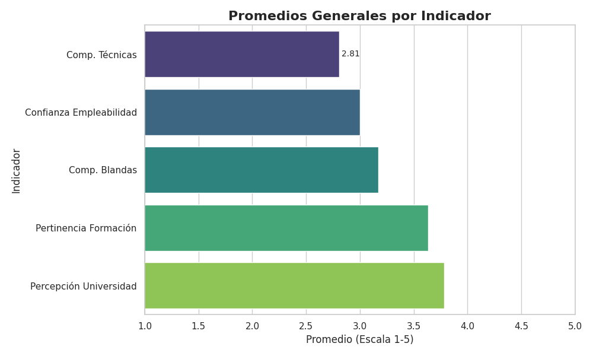

Introducción
Este dashboard presenta un análisis de la percepción sobre el uso de la Inteligencia Artificial (IA) y su impacto en la empleabilidad, basado en una encuesta realizada a estudiantes y profesionales de diversas carreras. El objetivo es contar una historia a través de los datos, desde una visión general hasta un análisis más detallado por área de estudio.
¿Quiénes participaron en la encuesta?
Para entender las percepciones, primero debemos conocer a los participantes. El siguiente gráfico muestra la distribución de los encuestados según su carrera, dándonos una idea de la diversidad de perfiles.

Una Mirada General: Promedios de Indicadores Clave
Empezamos con una vista panorámica. El siguiente gráfico resume los promedios generales de los indicadores más importantes de la encuesta. Esto nos da una primera impresión sobre la percepción general de la IA en el ámbito laboral.
Distribución de los Indicadores
Para profundizar un poco más, veamos cómo se distribuyen las respuestas para cada indicador. Esto nos permite observar la variabilidad y las tendencias en las opiniones de los participantes.
Factores Clave para la Empleabilidad
¿Qué factores consideran más importantes los encuestados para su futura empleabilidad en un entorno con IA? Este gráfico destaca los factores que los participantes creen que tendrán un mayor impacto en su carrera profesional.

Análisis por Carrera: Un Mapa de Calor de KPIs
Las percepciones pueden variar significativamente entre diferentes campos de estudio. Este mapa de calor nos ofrece una visión comparativa de los indicadores clave de rendimiento (KPIs) por carrera, permitiéndonos identificar patrones y diferencias notables.
Competencias por Carrera
Continuando con el análisis por área, el siguiente gráfico detalla las competencias que los participantes de cada carrera consideran más relevantes en la era de la IA.

Competencias vs. Datos
Este gráfico compara la importancia que los encuestados le dan a ciertas competencias en relación con el manejo de datos, dándonos una idea de cómo se valora la sinergia entre habilidades blandas y técnicas.

Promedios de Indicadores
Finalmente, este gráfico nos muestra un resumen de los promedios para un conjunto de indicadores, reforzando las tendencias generales observadas a lo largo del análisis.

Conclusión
A través de este recorrido visual, hemos explorado la percepción de la IA en la empleabilidad desde diferentes ángulos. Los datos sugieren que [aquí se podría añadir una conclusión general basada en los gráficos, por ejemplo: "existe un optimismo cauteloso, con un claro reconocimiento de la necesidad de desarrollar nuevas competencias para adaptarse al futuro del trabajo."]. Este análisis es un punto de partida para entender cómo las nuevas generaciones se están preparando para un mercado laboral en constante evolución.